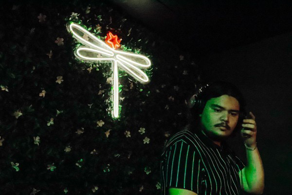
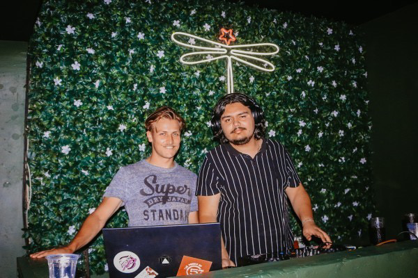

Who
BOBBI JAY, a DJ and music producer from Welkom, Free State, South Africa, has been spinning tracks since he was in grade 7. With a deep passion for music, he quickly advanced from small parties to booking gigs in clubs. Known for his eclectic sets and ability to energize any dancefloor, BOBBI JAY has been well versed in his art for over a decade. His years of tearing up the dancfloor led him to exploring music production, here he too excelled. BOBBI JAY has been featured on radio in his earlier years and has used his own original productions to control dancefloors with ease and precision.
What
BOBBI JAY is a master of blending deep house, dance anthems, and energetic beats. He is more than capable of crafting a set that keeps the crowd moving and coming back for more. His diverse range of influences allow him to seamlessly switch between genres, ensuring a fresh and unforgettable performance. Bobbi Jay is also making waves with his original tracks, which have been featured on both local stations and international online stations.
When
Bobbi Jay’s journey began when he was just a kid, sneaking his way into bookings by grade 8 and playing at clubs from grade 10. After moving to Hatfield in 2018, he secured a residency at a popular student club and has since been building his career, playing at various events and alongside notable names in the South African music scene. Today, he continues to grow his following while producing new music and performing live.
Where
Bobbi Jay’s love for music started as a passion but quickly evolved into a way of life. With a natural ear for rhythm and melody, his DJ sets tell a story that resonates with the crowd, turning every performance into a journey. From humble beginnings in Welkom, Bobbi Jay now commands stages across South Africa, from intimate club gigs to larger event settings.